▲ 섬진강기차마을 정원 일대. 심청어린이대축제는 이 공원 안에서 열린다 사진=한국관광공사
10월 8일(목)부터 11일(일)까지 나흘간 전남 곡성 섬진강기차마을에서 제26회 곡성심청어린이대축제가 열린다. 곡성군은 이 축제를 "아이에게 선물하는 특별한 하루"라는 주제로 소개하고, 보도에 따르면 초등학생 이하 어린이는 축제 기간 기차마을에 무료로 입장할 수 있다. 문제는 아이를 태우고 가는 자가용 운전자의 몫이다. 한글날(9일)이 낀 가을 일정이라 사람이 몰릴 수 있는데, 위키트리 보도에 따르면 곡성군은 임시 주차장 확보와 셔틀버스 운행 등 교통 대책을 세웠을 뿐 주차장 위치와 셔틀 노선, 운행 시간은 공개 자료에서 확인되지 않았다. 이 글은 곡성군 공식 축제 페이지와 보도, 한국관광공사 자료를 바탕으로 일정과 요금, 자차 이동 요령, 비 올 때 대안을 정리했다. 확인하지 못한 항목은 따로 표시했다.
1. 한눈에 보기 — 4일 일정과 기본 정보
곡성군 공식 페이지 기준 축제 기간은 2026년 10월 8일(목)~11일(일) 4일간, 장소는 곡성 섬진강기차마을, 주최·주관은 곡성군이다. 심청축제는 2001년 "효"를 주제로 시작했고, 2021년부터 가족과 어린이 중심의 "심청어린이대축제"로 바뀌었다고 공식 페이지는 소개한다.
| 항목 | 내용 | 비고 |
|---|---|---|
| 기간 | 2026년 10월 8일(목)~11일(일), 4일간 | 곡성군 공식 페이지 |
| 장소 | 곡성 섬진강기차마을(전남 곡성군 오곡면 기차마을로 232) | 내비 검색어는 "섬진강기차마을" |
| 축제 주소(공식) | 오곡면 기차마을로 232-16 | 공식 페이지 표기. 주차 목적지로는 확인 필요 |
| 어린이 입장 | 초등학생 이하 축제 기간 무료입장 | 보도(위키트리, MTN). 축제 공식 페이지(9월 11일 갱신)에는 무료입장 문구가 없고, 무료 대상의 세부 기준은 확인하지 못함 |
| 기차마을 운영시간 | 09:00~20:00(입장 마감 18:00), 연중무휴 | 한국관광공사 정보. 축제 기간 변동 여부는 확인하지 못함 |
| 기차마을 게이트 | 정문 매표소와 후문 매표소(시계탑이 있는 기차플랫폼 건물) | 곡성군 공지: 후문 매표소는 2023년 5월 11일 이후 기차플랫폼 건물로 이전 |
| 반입 금지 | 자전거·킥보드·전동차·인라인스케이트·드론·반려동물·휴대용 가스레인지 | 곡성문화관광 입장료 안내. 반려동물은 케이지·유모차 안에서도 출입 불가, 장애인 안내견만 예외 |
| 문의 | 축제 061-360-8471(곡성군 문화체육과), 기차마을 061-362-7461 | 공식 페이지 |
ℹ️ 어린이 무료입장 "범위"는 확인이 필요하다
보도는 "초등학생 이하 어린이 무료입장"이라고만 전한다. 이 무료가 기차마을 공원 입장료만 해당하는지, 증기기관차·레일바이크·도깨비마을 같은 별도 요금 시설까지 포함하는지는 확인하지 못했다. 평소에도 이 시설들은 공원 입장료와 별도라서, 무료 대상이 아니라고 보고 예산을 잡는 편이 안전하다.
이번에 다시 대조한 곡성문화관광 입장료 안내(2025년 8월 갱신)는 소인을 "48개월~만 12세 이하"로 구분하고 무료 대상을 곡성군민·국가유공자·장애인(중증 1~3급은 본인과 동반 1인)으로 적고 있다. "초등학생 이하 무료"는 이 안내에 없는 축제 한정 문구여서, 48개월 미만 영유아와 초등학교 고학년의 적용 방식은 여전히 확인하지 못했다. 기차마을 입장료는 증기기관차·레일바이크·놀이시설(드림랜드)과 별도이며, 가정역에서 증기기관차 표를 끊으면 기차마을 입장료가 포함된다는 안내가 공식 페이지에 있다.
2. 날짜별 프로그램 — 어느 날 가면 무엇이 있나
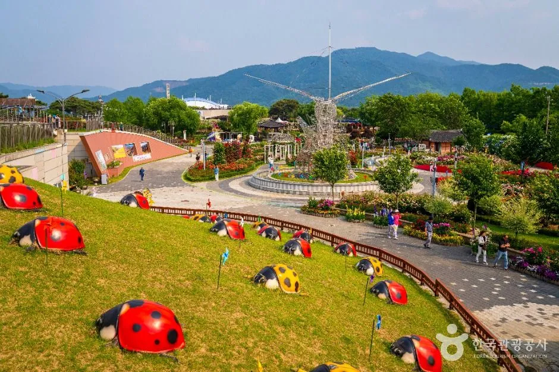
▲ 무당벌레 조형물이 있는 기차마을 잔디 언덕. 어린이 동선이 모이는 구역이다. 사진=한국관광공사
공식 프로그램 안내에는 일시와 장소가 꽤 자세히 나와 있다. 중앙무대 공연을 날짜별로 정리하면 아래와 같다. 아이가 좋아하는 캐릭터가 요일별로 다르므로, 날짜를 고를 때 가장 먼저 볼 부분이다.
| 날짜 | 시간 | 프로그램 |
|---|---|---|
| 8일(목) | 13:00~15:00 | 제3회 곡성심청 전국 어린이 합창대회(10팀) |
| 8일(목) | 16:00 | 개막 축하 퍼레이드·주제공연 "어린이 별★ 퍼레이드"(쌍절당광장~중앙광장~무대, 예정) |
| 8일(목) | 17:00 / 18:00 | 어린이 가족 뮤지컬 "백설공주" / 키즈 SHOW TIME |
| 9일(금) 한글날 | 13:00 / 14:00, 16:00 | 청강창극단 "꺼비와 청" / 캐릭터 싱어롱쇼 "고고다이노" |
| 9일(금) 한글날 | 15:00, 17:00 / 18:00 | "도전! 어린이 한글왕"(4라운드 퀴즈쇼) / 랜덤 플레이 댄스 |
| 10일(토) | 11:00 / 13:00 | 곡성군립 청소년 관현악단 / 곡성 I-on 페스타 |
| 10일(토) | 14:00, 16:00 | 캐릭터 싱어롱쇼 "캐치! 티니핑" |
| 10일(토) | 15:00, 17:00 / 18:00 | 뮤지컬 "이상한 나라의 앨리스" / FUN FUN MUSIC 콘서트(허각, 솔지, 이창민, 마이티마우스, 경서) |
| 11일(일) | 11:00 / 13:00, 15:00 | 곡성 I-on 페스타 / 뮤지컬 "알라딘" |
| 11일(일) | 14:00, 16:00 | 캐릭터 싱어롱쇼 "신비아파트" |
| 11일(일) | 17:00 / 18:00 | 신비한 과학 마술 체험쇼 / 키즈 SHOW TIME |
공연 외에 매일 열리는 프로그램도 있다. 장미공원에서는 "어린이 미션탐험대"(11:00·14:00·16:00, 4일간)가 열리고, 요술랜드 앞 광장에서는 도깨비 과자 꼴라주 만들기와 "우리아이 마음 상담", 치치뿌뿌놀이터 앞 광장에서는 곡물·한글·과학 체험이 운영된다. 쌍절당 광장의 매직 벌룬·버블 쇼, 잔디광장의 체험 부스 7곳과 곡성 팜마켓, 로즈팜마켓 일원의 먹거리존도 축제 기간 매일 연다. 인기 캐릭터 인형탈 12종이 기차마을을 돌아다니는 "기차마을에 캐릭터가 떴다!"도 4일 내내 진행된다.
✅ 날짜 고르는 요령
· 캐릭터 싱어롱쇼는 하루에 14:00·16:00 두 번이다. 아이 연령이 어리면 낮잠 시간과 겹치지 않는 회차를 고른다
· 허각·솔지 등이 나오는 콘서트는 10일(토) 18:00이라 이날은 낮부터 사람이 몰릴 가능성이 크다(공식 혼잡 예보는 없음, 추정)
· 한글날(9일)은 "어린이 한글왕"이 15:00, 17:00에 열려 가족 참여형 프로그램을 노리기 좋다
· 프로그램은 "예정"이 붙은 항목이 있어 당일 변경될 수 있다
공식 공연표를 기준으로 날짜마다 현실적인 동선을 짜 보면 아래와 같다. 공연 길이는 공식 자료에 없어서 시작 시각만 쓰고, 이동·식사 시간은 필자가 임의로 배분한 제안이다. 증기기관차는 아래 5장 시간표의 출발 시각을 따랐다.
| 날짜 | 오전~점심 | 오후 | 저녁 | 메모 |
|---|---|---|---|---|
| 8일(목) 개막 | 11:00 증기기관차 탑승(12:15 복귀) 후 점심 | 13:00 합창대회 관람 또는 14:00 장미공원 미션탐험대, 16:00 개막 퍼레이드 | 17:00 뮤지컬 "백설공주", 18:00 키즈 SHOW TIME | 평일이라 비교적 한산할 수 있으나 공식 혼잡 정보는 없음(추정). 입장 마감은 18:00 |
| 9일(금) 한글날 | 09:30 증기기관차(10:45 복귀) 후 11:00 미션탐험대 | 13:00 창극 "꺼비와 청", 14:00 싱어롱쇼 "고고다이노", 15:00 "어린이 한글왕" | 16:00 고고다이노 2회차 또는 17:00 한글왕 2회차, 18:00 랜덤 플레이 댄스 | 공휴일이라 가족 방문이 몰릴 수 있음(추정). 14:00 공연과 14:00 미션탐험대는 시각이 겹침 |
| 10일(토) | 11:00 청소년 관현악단 또는 미션탐험대, 점심 후 13:00 곡성 I-on 페스타 | 14:00 "캐치! 티니핑", 15:00 뮤지컬 "이상한 나라의 앨리스" | 16:00 티니핑 2회차 또는 17:00 앨리스 2회차, 18:00 FUN FUN MUSIC 콘서트 | 콘서트 때문에 저녁 귀가 시간대가 가장 붐빌 가능성이 큼(추정). 어린이 위주면 17:00 앨리스까지만 보고 나오는 선택도 가능 |
| 11일(일) 폐막 | 09:30~11:00 증기기관차, 11:00 곡성 I-on 페스타 또는 미션탐험대 | 13:00 뮤지컬 "알라딘", 14:00 "신비아파트" | 15:00 알라딘 2회차 또는 16:00 신비아파트 2회차, 17:00 과학 마술 체험쇼, 18:00 키즈 SHOW TIME | 일요일 귀가 차량이 겹칠 수 있음(추정). 마술 체험쇼는 참여형이라 일찍 자리 확보를 권장 |
| 연령대 | 추천 프로그램 | 이유 | 확인하지 못한 것 |
|---|---|---|---|
| 영유아(미취학) | 캐릭터 싱어롱쇼, 인형탈 퍼레이드·포토 타임, 치치뿌뿌놀이터 앞 광장 체험, 매직 벌룬·버블 쇼 | 공식 설명상 노래·인형·비눗방울 위주의 짧은 참여형 프로그램 | 공연 길이, 연령 제한, 유모차 진입 구역 |
| 초등 저학년 | 장미공원 "어린이 미션탐험대", 도깨비 과자 꼴라주 만들기, 마술 체험쇼, 랜덤 플레이 댄스 | 미션 해결·만들기·직접 참여가 중심. 미션탐험대는 아이와 어른이 팀을 이루는 보물찾기 형식 | 참가 정원, 대기 방식, 체험 재료비 |
| 초등 고학년 | "도전! 어린이 한글왕"(개인전·단체전 4라운드 퀴즈), 전국 어린이 합창대회 관람, 뮤지컬 | 퀴즈 쇼와 합창대회는 읽기·듣기 능력이 있는 연령에 맞는 편 | 한글왕 참가 신청 방식 |
| 전 연령 가족 | 증기기관차, 기차마을 레일바이크, 장미공원, FUN FUN MUSIC 콘서트 | 보호자와 아이가 함께 즐기는 구성 | 어린이 증기기관차 요금 면제 여부 |
3. 자차 접근 — 주차장·셔틀·혼잡 시간대
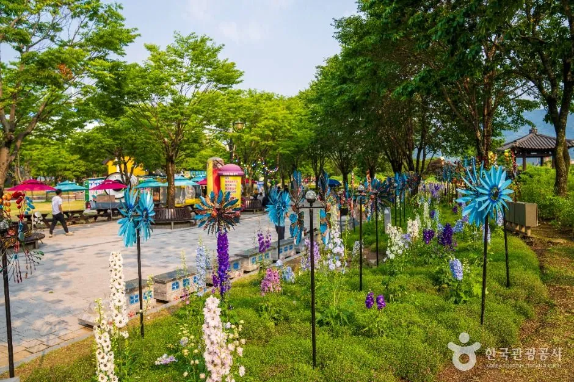
▲ 바람개비 화단과 놀이 공간이 이어진 기차마을 광장. 사진=한국관광공사
가장 중요한 부분이지만 가장 확인된 정보가 적은 부분이다. 곡성군은 9월 1일 열린 추진상황 보고회(위키트리 보도)에서 주차와 교통관리 대책을 점검했고, 같은 보도는 "주차 대란을 방지하기 위한 임시 주차장 확보 및 셔틀버스 운행 등 특별 교통 대책을 수립했다"고 전했다. MTN 보도에는 주차·교통관리 논의만 나온다. 그러나 임시 주차장의 위치와 수용 대수, 요금, 셔틀 운행 구간·시간은 공식 축제 페이지와 보도 어디에서도 찾지 못했다.
| 항목 | 확인된 내용 | 확인하지 못한 내용 |
|---|---|---|
| 내비 목적지 | 섬진강기차마을(곡성군 오곡면 기차마을로 232) | 축제용 임시 주차장 별도 주소 |
| 주차 가능 여부 | 한국관광공사 정보상 기차마을 주차 가능 | 상설 주차장 수용 대수, 주차 요금 |
| 임시 주차장·셔틀 | 곡성군이 임시 주차장 확보·셔틀버스 운행 계획을 세웠다고 보도됨 | 위치, 노선, 첫차·막차 시간, 요금 |
| 교통 통제 | 보도에서 구체적 통제 구간 언급 없음 | 진입로 통제·우회 안내 |
| 혼잡 시간대 | 공식 발표 없음 | 시간대별 대기 시간 |
| 안내 문의 | 곡성군 문화체육과 예술축제팀 061-360-8471 | - |
10월 3일 기준으로 곡성문화관광 축제 페이지(9월 11일 갱신)와 관광소식 공지 게시판을 다시 확인했지만 임시 주차장·셔틀 공지는 올라와 있지 않았다. 게시판의 가장 최근 글도 2025년 7월의 증기기관차 운행휴무 안내였다. 대신 같은 게시판에 2023년 5월 게시된 "섬진강기차마을 주변 주차 로드맵"(이미지 지도)이 있어 평소 이용하는 주차장 배치는 확인된다. 이 지도는 축제용이 아니며 수용 대수와 요금은 적혀 있지 않다. 올해 임시 주차장이 이 중 어느 곳인지는 근거가 없다.
| 지도 번호 | 위치(지도상) | 자차 이용 메모 |
|---|---|---|
| 1번(2곳) | 후문 매표소 쪽 철길변과 정문 방향 도로변의 대형 구역 | 입구와 가장 가까운 후보. 개막일·주말에는 일찍 찰 가능성이 있음(추정) |
| 2번·3번 | 정문 매표소 남동쪽 철길변과 기차마을 남쪽 끝(압록·구례 방면) | 소규모로 표시됨. 증기기관차 이용 후 귀가 동선과 겹침 |
| 4번 | 정문 맞은편 도로 건너편의 넓은 구역 | 지도상 가장 넓은 표시. 도로를 건너야 하므로 아이 동반 시 횡단 동선 확인 필요 |
| 6번 | 곡성역 옆, "버스전용" | 자가용 이용 불가로 표시 |
| 5·7~17번 | 곡성읍내(곡성경찰서·뚝방마켓·곡성레저문화센터·전통시장·충의공원 일대) | 기차마을에서 멀어 걷기 힘든 구간. 셔틀이 연결되는지는 확인하지 못함 |
공식 정보가 비어 있으므로 아래는 일반적인 방문 요령이며 추정이다. 어린이 대상 행사는 오전 일찍 도착해 점심 전에 상당 부분을 보고 나오는 쪽이 대체로 편하다. 중앙무대 오후 공연이 14:00부터 몰려 있어, 오후 공연을 볼 계획이라면 13시 전에 주차를 끝내는 것이 낫다. 임시 주차장이 멀 때는 셔틀 탑승 위치를 먼저 확인하고, 하차 위치에서 입구까지 거리를 안내 요원에게 물어 두자. 증기기관차와 가정역 레일바이크를 함께 타려면 기차마을에서 가정역까지 이동해야 하므로, 차를 어디에 둘지 미리 정해야 한다.
✅ 자차 방문 전 체크
· 출발 전 곡성군청 문화체육과(061-360-8471)에 임시 주차장 위치와 셔틀 시간을 전화로 확인한다
· 개막일(8일)과 주말(10~11일)은 한글날(9일)이나 평일보다 혼잡할 가능성이 있다고 보고 여유 있게 출발한다(추정)
· 카시트와 유모차 이동이 있으니 하차 후 걸을 거리를 짧게 만들 수 있는 주차 위치를 우선한다
· 귀가 시간은 17:00 공연이나 18:00 콘서트가 끝나는 시간대와 겹치지 않게 잡는다
· 기차마을 인근 주유·충전 정보는 확인하지 못했으니 출발 전에 연료를 채워 두는 편이 낫다
· 아이가 차에서 자주 힘들어한다면 아이 차멀미 대처법을 출발 전에 읽어 두자
4. 요금 — 입장료·증기기관차·레일바이크
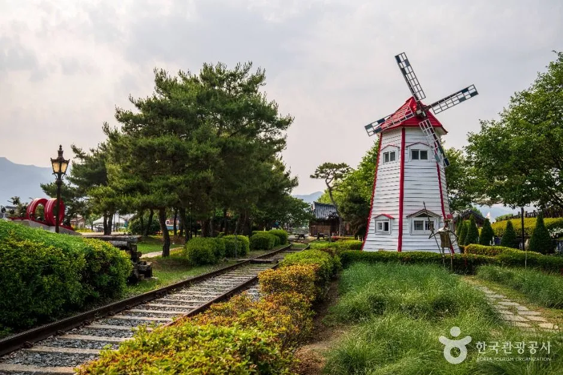
▲ 풍차와 옛 철길이 남아 있는 기차마을 정원. 입장권은 이 공원 전체에 해당한다. 사진=한국관광공사
기차마을 입장료와 증기기관차, 레일바이크 요금은 서로 다르다. 자세한 구조는 곡성 섬진강기차마을 증기기관차·레일바이크 가이드에 정리해 두었고, 아래는 어린이 동반 가족이 알아야 할 항목만 뽑은 표다. 이 요금은 곡성문화관광 공식 안내(증기기관차는 2025년 8월 1일 시행 기준)를 따른 것으로, 축제 기간 요금 변동 여부는 확인하지 못했다.
| 구분 | 요금 | 비고 |
|---|---|---|
| 공원 입장료(평상시) | 대인 5,000원, 소인·경로 4,500원 | 소인은 생후 48개월~만 12세, 경로는 만 65세 이상. 장미공원·천적곤충관·동물농장 포함 |
| 축제 기간 어린이 입장 | 초등학생 이하 무료(보도) | 동반 성인은 대인 요금 적용으로 보임. 확인 필요 |
| 증기기관차 왕복 | 대인 좌석 10,000원, 소인·경로 좌석 9,000원 | 입석은 대인 8,000원, 소인·경로 7,000원 |
| 증기기관차 편도 | 대인 좌석 7,000원, 소인·경로 좌석 6,000원 | 입석은 대인 6,000원, 소인·경로 5,000원 |
| 기차마을 레일바이크(원내 1km) | 4인승 1대 10,000원 | 현장 구매, 선착순, 5분 안팎 |
| 섬진강 레일바이크(가정역) | 2인승 20,000원, 3인승 25,000원, 4인승 30,000원 | 가정역~봉조반환점 3.6km 순환, 현장 발권, 12:00~13:00 점검 |
| 섬진강 레일바이크(침곡역) | 2인승 20,000원, 4인승 30,000원 | 침곡역→가정역 5.1km 편도, 가정역→침곡역은 셔틀. 10·12·14·16시 출발, 30~40분 소요, 출발 20분 전 도착 필요, 현장 발권 |
증기기관차의 소인 기준은 만 4세~12세이고, 국가유공자는 본인 50% 할인, 중증 복지카드 소지자는 본인 50%에 보조인 1인 무료이며 중복 할인은 되지 않는다(곡성군 공식 안내). 어린이용 증기기관차 무료 안내는 공식 페이지에서 찾지 못했다.
성인 2명과 초등학생 이하 어린이 2명이 방문한다고 가정해 보자. 보도대로 어린이 무료가 적용되면 공원 입장료는 성인 2명분이고, 평상시 대인 요금 기준으로 10,000원이다. 여기에 증기기관차 왕복 좌석(성인 20,000원, 어린이에게 소인 요금이 적용되면 18,000원)과 4인승 레일바이크를 더하면 비용이 빠르게 늘어난다. 어린이의 증기기관차·레일바이크 요금이 면제되는지는 확인하지 못했으므로 현장에서 확인해야 한다.
5. 증기기관차·레일바이크 — 축제날 어떻게 엮을까
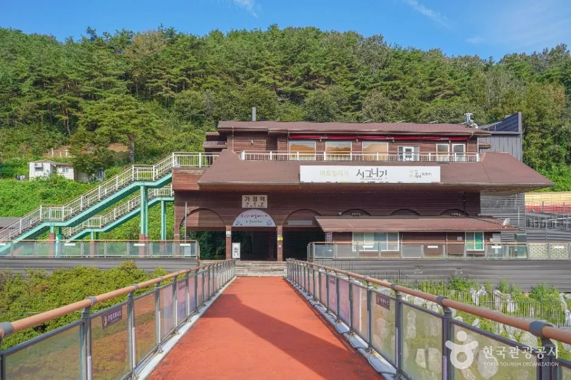
▲ 섬진강 레일바이크 출발지인 가정역 인근. 기차마을과는 증기기관차나 차량으로 이동한다. 사진=한국관광공사
| 회차 | 기차마을 출발 | 가정역 도착 | 가정역 출발 | 기차마을 도착 |
|---|---|---|---|---|
| 1 | 09:30 | 10:00 | 10:15 | 10:45 |
| 2 | 11:00 | 11:30 | 11:45 | 12:15 |
| 3 | 13:00 | 13:30 | 13:45 | 14:15 |
| 4 | 14:30 | 15:00 | 15:15 | 15:45 |
| 5 | 16:00 | 16:30 | 16:45 | 17:15 |
10월은 하루 5회 모두 운행하는 달로 안내돼 있다. 왕복에 약 1시간 15분이 걸리므로, 오전에 증기기관차를 타고 오후에 중앙무대를 보는 식으로 짜면 대기 시간이 줄어든다. 예를 들어 11:00 열차를 타면 12:15에 돌아와 점심을 먹고 13:00대 공연을 볼 수 있다(축제 기간 증설 편성 여부는 확인하지 못함). 가정역 섬진강 레일바이크는 12:00~13:00 점검 시간에 운행하지 않는다. 축제 기간에는 대기가 길어질 수 있으니 도착하자마자 승차권부터 확보하는 편이 낫다(공식 대기시간 정보 없음).
곡성군 공식 안내상 증기기관차는 왕복 75분(가정역 15분 정차 포함), 속도 30~40km/h, 정원 224명(좌석 172, 입석 50, 장애인 전용 2)이다. 회차 간격은 1시간 30분에서 2시간이어서 한 번 놓치면 공연 계획이 통째로 밀린다. 시간표를 기준으로 반나절 코스를 짜면 아래와 같다.
| 코스 | 동선 | 어울리는 공연·프로그램 | 주의 |
|---|---|---|---|
| A. 오전 탑승형 | 09:30 도착·입장 → 11:00 열차 → 12:15 복귀·점심 → 13:00 공연 | 9일 "꺼비와 청", 10일 곡성 I-on 페스타, 11일 "알라딘"(13:00) | 11:00 열차는 가정역 정차 15분(11:30~11:45)이라 레일바이크는 타기 어려움 |
| B. 낮 탑승형 | 12:00 점심 → 13:00 열차 → 14:15 복귀 → 14:30~15:30 장미공원·체험 → 16:00 공연 | 16:00 싱어롱쇼 2회차, 8일 개막 퍼레이드 | 14:00 공연과 미션탐험대는 열차 시간과 겹쳐 놓침 |
| C. 오후 탑승형 | 13:00 공연 → 14:30 열차 → 15:45 복귀 → 16:00 공연 → 17:00 공연 | 공연 연속 관람 | 복귀 15분 뒤 16:00 공연이 시작해 걸어서 중앙무대로 가는 시간이 빠듯함 |
| D. 가정역 레일바이크 결합 | 13:00 열차 편도 → 13:30 가정역 도착 → 레일바이크 → 15:15 가정역 출발 열차 → 15:45 복귀 | 16:00 공연 직전 복귀 | 레일바이크 소요 시간은 확인하지 못했고, 왕복권으로 다음 회차 복귀가 되는지도 확인하지 못함(편도 2장이면 대인 좌석 14,000원) |
기차마을 공식 안내에는 "셔틀버스로 알차게 즐기는 방법"도 있다. 정문에서 셔틀(11:40·13:40·15:40)을 타고 침곡역에서 레일바이크(10·12·14·16시)를 탄 뒤 가정역에서 증기기관차로 돌아오는 순서다. 다만 이 안내의 증기기관차 시각(11:20·13:20·15:20·17:20)이 위 시간표와 맞지 않고, "셔틀 운행 여부는 변경될 수 있다"는 단서가 붙어 있다. 이 방식을 쓸 거라면 전화로 먼저 확인하자. 가정역에서 열차를 기다리는 시간에는 출렁다리·청소년야영장·천문대 주변 산책을 권한다는 안내도 있다.
ℹ️ 축제 중 증기기관차 운행은 공지로 확인
시간표는 평상시 안내 기준이다. 10월 3일 곡성문화관광의 열차 안내와 공지 게시판을 다시 확인했으나 축제 기간 임시 증편이나 운행 조정 공지는 없었고, 증편 여부는 그대로 확인하지 못한 상태다. 기차마을 061-362-7461이나 증기기관차 문의처(061-363-6174)로 전화해 확인하는 것이 안전하다.
6. 가을 섬진강 연계 코스 — 침실습지·압록유원지
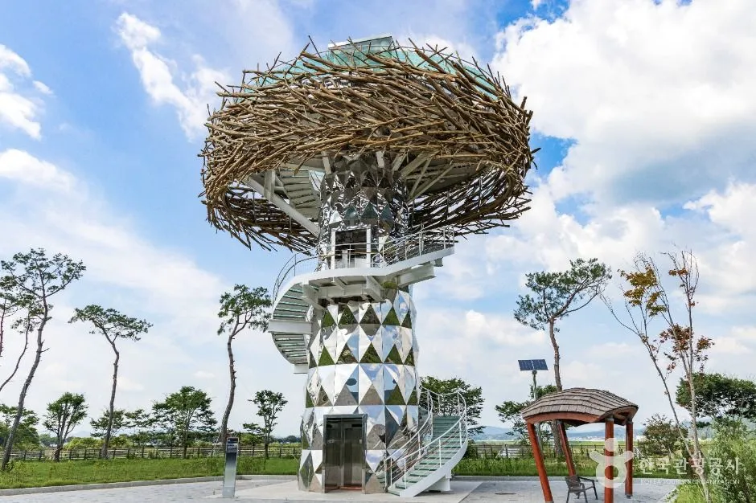
▲ 침실습지의 둥지 모양 전망대. 습지 전경을 높은 곳에서 볼 수 있다. 사진=한국관광공사
어린이 축제만 보고 돌아가기 아쉽다면, 한국관광공사 자료에서 확인되는 인근 두 곳을 연결할 수 있다. 기차마을에서 각 장소까지의 차량 거리·시간은 공식 자료에 없어, 아래 표에 경로 계산 서비스로 추정한 값을 따로 실었다.
| 장소 | 주소 | 확인된 내용 |
|---|---|---|
| 침실습지 | 곡성군 오곡면 오지3길 5-1(곡성군 안내는 곡성읍 신리 91-2, 내비에 "곡성군 하수 처리장" 입력) | 곡성천·금천천·고달천이 만나는 면적 203만㎡의 국가습지 보호구역(제22호). 수달·삵·남생이 등 665종 서식 확인. 일교차가 큰 가을부터 봄까지 물안개 명소. 상시 개방, 연중무휴 |
| 압록유원지 | 곡성군 죽곡면 섬진강로 1012 | 섬진강과 보성강이 합류하는 지점의 자연 유원지. 3만여 평 백사장, 주차 가능. 반월교와 철교가 나란히 놓인 풍경 |
| 섬진강기차마을 장미공원 | 기차마을 내 | 공식 페이지는 "가을 장미향"을 언급. 어린이 미션탐험대 장소 |
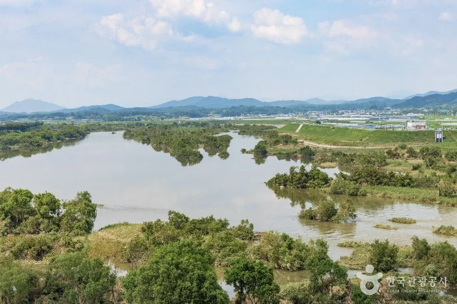
▲ 섬진강이 넓게 휘돌며 만드는 침실습지 풍경. 일교차가 큰 아침에는 물안개가 낀다고 소개된다. 사진=한국관광공사
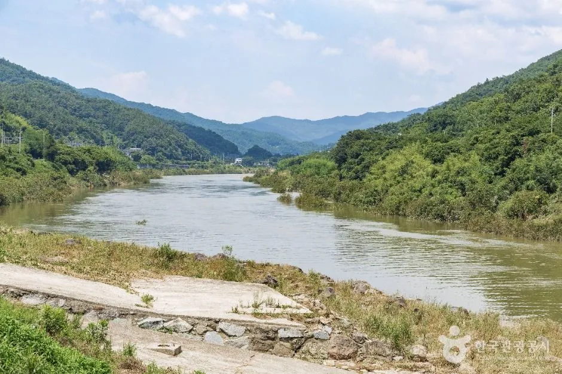
▲ 압록유원지 일대 섬진강. 백사장과 강변이 이어진다. 촬영 시점은 표기되지 않았고 잎이 푸른 시기로 보인다. 사진=한국관광공사
기차마을(오곡면 기차마을로 232)에서 각 곳까지의 자동차 이동은 OpenStreetMap 기반 경로 계산(OSRM)으로 10월 3일에 추정했다. 도로 통제와 축제 혼잡은 반영되지 않은 참고치라 실제 내비 값과 다를 수 있다.
| 목적지 | 주소 | 추정 거리·시간 | 메모 |
|---|---|---|---|
| 침실습지 | 오곡면 오지3길 5-1 | 약 1.2km, 2분 | 가장 가까운 연계 후보 |
| 곡성군청소년야영장(가정역 방면) | 고달면 가정마을길 51 | 약 9.2km, 11분 | 가정역 대기 시간 산책 후보(곡성군 안내) |
| 섬진강도깨비마을 | 고달면 호곡도깨비길 119-97 | 약 12.2km, 21분 | 기차마을 밖. 10:00~17:00, 월~수 휴무(한국관광공사) |
| 압록유원지 | 죽곡면 섬진강로 1012 | 약 13.5km, 14분 | 주차 가능(한국관광공사) |
| 대황강출렁다리 | 죽곡면 대황강로 802 | 약 21.6km, 21분 | 한국관광공사 사진에 일몰 장면이 실린 곳 |
| 대황강 자연휴식공원 | 석곡면 석곡2길 13 | 약 22.5km, 24분 | 제방·둔치 코스모스 군락(곡성군 안내) |
가을 풍경을 보고 싶다면 석곡면 대황강 자연휴식공원이 후보다. 곡성군 안내에 따르면 제방과 둔치에 코스모스가 대규모로 식재돼 초가을에 장관을 이루고, 매년 9월 말 코스모스음악회가 열린다. 철따라 벚꽃·배롱나무꽃·코스모스·억새가 이어지는 강변 산책로는 반구정습지까지 연결된다. 다만 10월 8~11일에 코스모스가 얼마나 남아 있을지는 확인하지 못했다. 아래 사진은 한국관광공사가 올린 이 공원 사진이며 촬영 연월은 표기되지 않았다. 위쪽 기차마을 사진은 푸른 잎과 장미·델피니움이 보이는 초여름(5~6월 추정) 모습이라, 10월 풍경에 가까운 사진은 이쪽이다. 가을 코스를 더 이어 가려면 인접한 구례 화엄사 가을 가이드도 참고할 수 있다(두 곳 사이 이동 시간은 확인하지 못함).
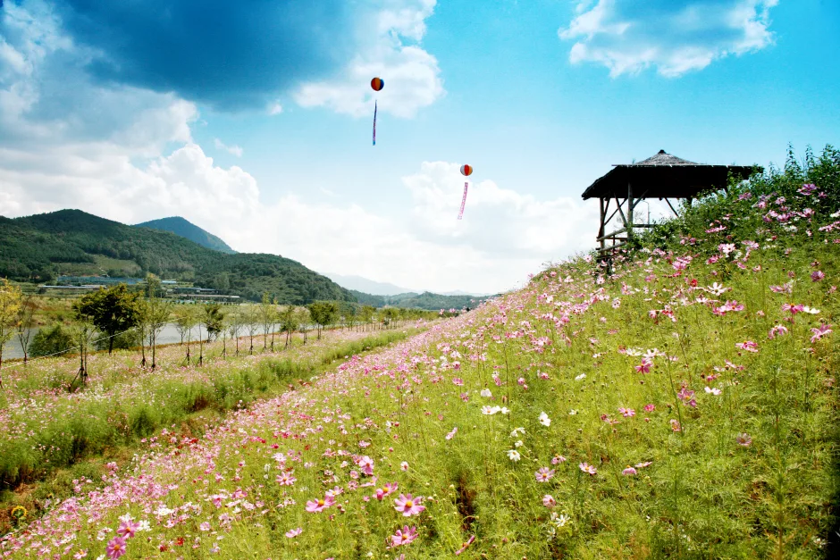
▲ 대황강 자연휴식공원 둔치의 코스모스 언덕. 촬영 연월은 표기되지 않았고 코스모스 개화기(초가을 전후)의 모습이다. 10월 8~11일 개화 상태는 확인하지 못했다. 사진=한국관광공사
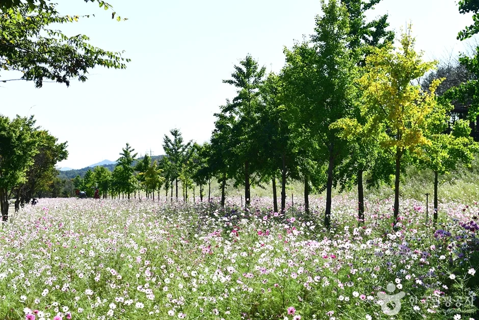
▲ 가로수 옆으로 코스모스가 핀 공원 풍경. 촬영 시점은 표기되지 않았고, 잎이 아직 초록빛이라 초가을 전후로 추정된다. 사진=한국관광공사
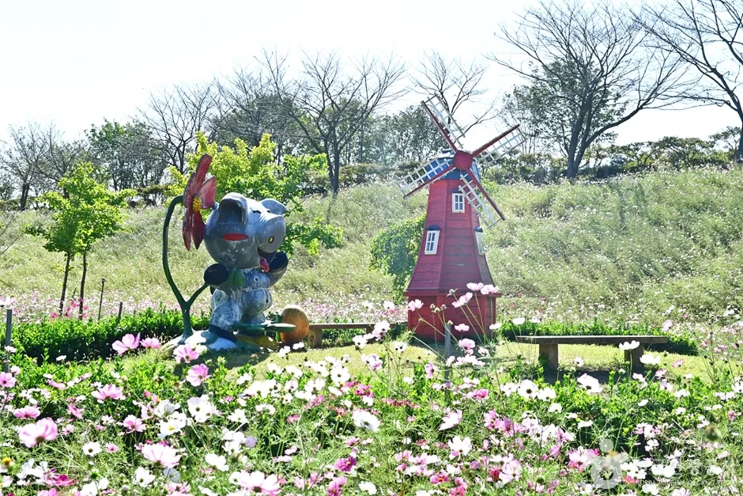
▲ 코스모스 꽃밭 사이에 풍차와 캐릭터 조형물이 놓인 석곡면 일대. 촬영 시점 미표기, 코스모스 개화기 모습이다. 사진=한국관광공사
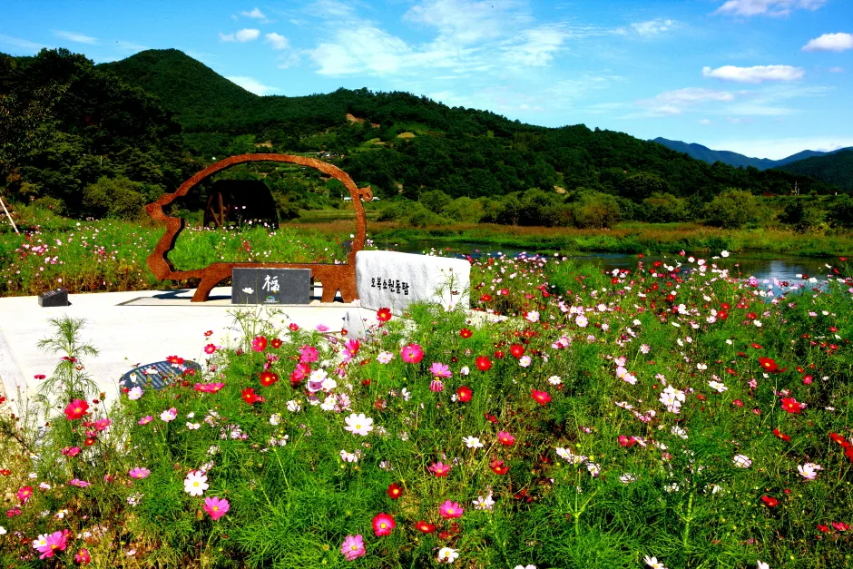
▲ 대황강변 꽃밭의 코스모스와 조형물. 촬영 시점 미표기, 코스모스 개화기 모습으로 보인다. 사진=한국관광공사
동선 예시는 이렇다. 오전에 기차마을에서 어린이 프로그램을 즐기고 점심 후 침실습지에서 산책한 뒤, 시간이 남으면 압록유원지 강변에서 쉬었다 귀가하는 방식이다. 물안개를 보려면 이른 아침이어야 해서 어린이 동반 일정과는 잘 맞지 않는다. 습지는 상시 개방이라고 했지만 탐방로 상태는 곡성군청 관광과(061-360-8360)에 문의하자.
7. 비 올 때 대안 — 실내와 우천 대비
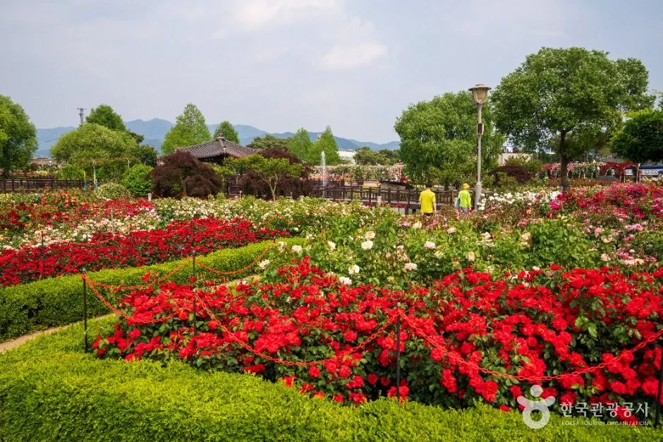
▲ 기차마을 장미공원. 비가 오면 야외 코스는 동선을 줄여야 한다. 사진=한국관광공사
중앙무대 공연과 장미공원 미션 프로그램은 야외다. 우천 시 공연 취소나 변경 여부는 공식 자료에서 확인하지 못했다. 우천 대응이 필요하면 아래를 검토한다.
| 후보 | 내용 | 확인 상태 |
|---|---|---|
| 증기기관차 | 열차 이동 중심이라 우천 중에도 이용 후보 | 우천 시 운행 여부는 확인하지 못함 |
| 기차마을 내 실내 시설 | 공원 입장료에 천적곤충관 관람 포함(곡성문화관광 안내) | 운영 시간은 확인하지 못함 |
| 섬진강도깨비마을 | 고달면 호곡도깨비길 119-97. 도깨비 전시관·숲 놀이터·인형극 등(한국관광공사·공식 홈페이지). 10:00~17:00, 월~수 휴무라 축제 4일(목~일)은 운영일. 문의 061-363-2953·362-2954 | 개인 입장료는 공식 홈페이지에도 없고 단체 프로그램 요금만 게시됨. 전시관은 실내로 보이나 우천 운영은 확인하지 못함 |
| 기차마을 생태학습관 | 기차마을로 252-16. 천적 곤충과 무당벌레 모형 체험실, 09:00~18:00 연중무휴, 문의 061-360-8404(한국관광공사) | 한국관광공사의 요금 문구(소인 4,000원)가 곡성군 안내(4,500원)와 달라 현장 확인 필요 |
| 압록상상스쿨 | 압록유원지 인근 실내 체험공간(한국관광공사 설명) | 운영 여부와 요금은 확인하지 못함 |
| 일정 조정 | 방문 전날 곡성군 공식 페이지와 전화 문의로 공연 변경 확인 | 10월 3일 재확인에도 우천 대책 공지는 없음 |
✅ 비 오는 날 준비물
· 아이용 우비와 여벌 양말, 신발 비닐백을 트렁크에 둔다
· 비 오는 날 레일바이크를 우비를 입고 탄 사례가 소개된 적은 있으나(대한민국 정책브리핑 사례). 곡성군 공식 안내에는 가정역~봉조반환점 3.6km 코스와 침곡역→가정역 5.1km 코스가 함께 올라 있으며, 우천 시 운행 여부와 축제 기간 운영 여부는 확인이 필요하다
· 젖은 도로와 임시 주차장은 미끄러울 수 있으니 서행한다
· 유모차 레인커버도 챙긴다
8. 먹거리와 편의 — 아이 동반 팁
공식 안내에는 음식 부스와 푸드트럭 목록이 있다. 푸드트럭은 꽈배기·핫도그·타코야키, 닭꼬치, 솜사탕·슬러시, 소프트아이스크림, 커피·수제에이드·쿠키, 국화빵·와플·호떡, 감자샌드위치·미니붕어빵 등이 있고, 일반 부스로는 군 개발 음식인 도깨비버거·도깨비컵밥과 생활개선회의 심청주막(떡볶이·해물파전·김치전·도토리묵)이 있다. 먹거리존은 로즈팜마켓 일원에서 1회용품 없는 푸드존으로 운영된다고 한다. 가격은 확인하지 못했다. 보도에는 유아와 노약자 휴게 공간, 미아 보호소, 수유실 확충과 의료지원반 운영 계획도 언급됐으나 위치는 확인하지 못했다.
9. 요약
제26회 곡성심청어린이대축제는 10월 8일(목)~11일(일) 4일간 섬진강기차마을(곡성군 오곡면 기차마을로 232)에서 열린다. 초등학생 이하 어린이는 축제 기간 무료입장(보도)이며, 중앙무대에서는 8일 개막 퍼레이드와 합창대회, 9일 "고고다이노"와 한글왕, 10일 "캐치! 티니핑"과 FUN FUN MUSIC 콘서트, 11일 "신비아파트"와 "알라딘" 공연이 이어진다.
자차 방문객은 위키트리 보도대로 곡성군이 임시 주차장과 셔틀버스를 준비한다면 출발 전에 군청(061-360-8471)에 위치와 시간을 확인하자. 증기기관차(대인 왕복 좌석 10,000원)와 레일바이크(원내 4인승 10,000원, 가정역 4인승 30,000원)는 별도 요금이고, 가을 코스는 침실습지와 압록유원지가 후보다. 10월 3일 재확인에서 새로 확인된 것은 평소 주차장 배치(2023년 공지 지도), 도깨비마을 운영시간(10:00~17:00, 월~수 휴무)과 위치(고달면), 침곡역 레일바이크 코스, 기차마을 반입 금지 품목, 기차마을 출발 자차 이동 추정 시간이다. 임시 주차장 위치·수용 대수·요금, 셔틀 노선, 시간대별 혼잡, 우천 시 공연 변경, 축제 기간 증편과 시설 요금 변동, 도깨비마을 개인 입장료, 어린이 무료입장의 세부 범위는 여전히 확인하지 못했다. 방문 전 공식 공지를 확인하자.